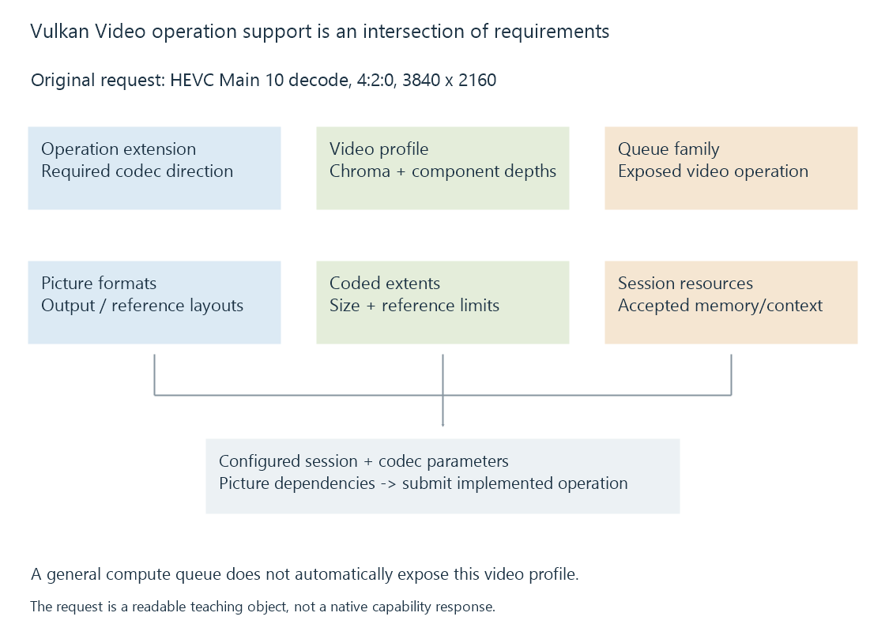

Vulkan Video profiles, queues and sessions
Vulkan Video exposes supported codec operations through video profiles, queue capabilities, session resources and codec-specific picture parameters.
Vulkan Video adds supported compressed-video operations to Vulkan through video-related extensions. It combines a codec operation, a video profile, suitable queue support and configured resources.
The application still supplies the selected encoded media and the codec-specific information needed for the operation.
A profile describes the operation and media
A Vulkan video profile includes the decode or encode operation, chroma subsampling and component bit depths, with codec-specific profile information provided through the relevant extension structures.
This original readable fixture expresses one request:
{
"operation": "decode",
"codec": "h265",
"profile": "Main 10",
"chroma": "4:2:0",
"lumaBitDepth": 10,
"chromaBitDepth": 10,
"codedWidth": 3840,
"codedHeight": 2160
}
It is a teaching object, not a native Vulkan structure or captured capability response.
A HEVC Main 10 decode request is different from a H.264 encode request. The existence of the latter does not satisfy the former.
Capability is an intersection
The application checks the relevant device extensions, queue-family video operations and profile-specific capabilities. It then establishes supported picture/reference formats and resource requirements.

| Condition | Fact needed |
|---|---|
| Codec operation extension | The required operation is exposed |
| Queue support | The selected family can execute it |
| Video profile | The implementation accepts the requested configuration |
| Coded extent and references | The operation fits its limits |
| Picture/resource formats | Results and references have accepted storage |
| Application integration | Codec parameters and dependencies are supplied correctly |
A general graphics or compute queue does not automatically promise those video capabilities.
Sessions and pictures retain separate roles
A video session represents an operation/profile context and its implementation's required session memory. Session-parameter objects can supply reusable codec information.
Decoded-picture-buffer resources and output picture resources describe picture storage used by reconstruction and later consumers. Their formats and whether output/reference storage can coincide follow the implementation's queried capabilities.
A session successfully existing does not make an arbitrary picture resource compatible with it.
The client supplies codec interpretation
A media implementation locates the selected stream, parses required codec information and supplies the codec-specific operation data.
The video-coding API does not read an arbitrary MKV or MP4 filename and construct the complete playback route automatically. Reconstruction order, references and programme timing still need their intended relationships.
Reference pictures must stay usable while later operations need them. Synchronization connects reconstruction, processing and encoding uses of the resulting images.
Standardized operations need actual implementation
The specification defines the contract for an exposed codec operation. The required extension/profile/format set must still be implemented by the driver and used by the application.
See Also
- Vulkan for media processing
- How media APIs connect applications to hardware
- How to read a hardware codec support matrix
- Hardware decoding and software decoding
- Hardware encoding and software encoding
- Hardware frame surfaces and GPU contexts